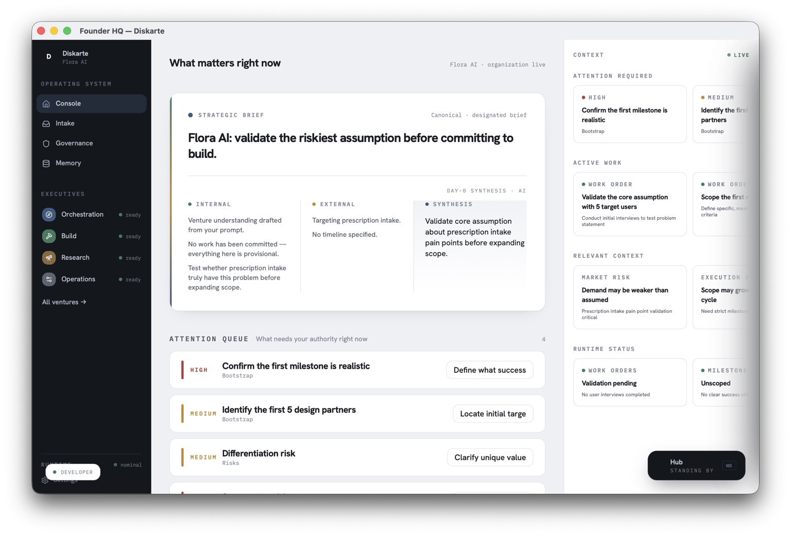

Your tools know tasks. They do not know your organization.
AI can draft, summarize, and execute, but it rarely understands why the work matters, who holds authority, or which constraints cannot be violated.
Diskarte is the operating system for founders building with AI. It brings organizational intelligence, governance, and execution into one coherent runtime so your company can move faster without losing judgment, context, or control.

Founders now have more leverage than ever, but the operating system underneath the company is still fragmented across documents, chats, dashboards, and human memory.
AI can draft, summarize, and execute, but it rarely understands why the work matters, who holds authority, or which constraints cannot be violated.
Without prioritization and governed escalation, AI simply accelerates noise and pushes more cognitive load back onto the person it was meant to help.
Decisions lose their rationale, projects lose context, and teams rebuild understanding every time people, tools, or priorities change.
Diskarte connects organizational intelligence, governance, memory, and execution so AI can act with context instead of guesswork.
AI reads your strategy, structure, decisions, risks, and operating context before recommending what should happen next.
Authority, evaluations, decisions, and actions remain traceable, explainable, and constrained by your organization’s boundaries.
Strategy becomes briefs, work orders, handoffs, and follow-through without losing the intent that made the work important.
Your company preserves what it learned, why it decided, and what changed so every new action begins with more context.
Diskarte does not give you another dashboard to manage. It assembles the current organizational situation, identifies where founder judgment is required, and keeps routine execution moving below that threshold.
The alpha is for a small group of founders willing to build the future of organizational intelligence with us.
I built Diskarte because I needed an operating system that could keep up with the speed of AI without sacrificing judgment, alignment, or trust.
I wanted something that could preserve the plot while everything else accelerated.
Margaux Flores Founder, DiskarteFounder-led organizations and small teams already using AI seriously, especially where decisions, context, and execution are beginning to fragment across tools and people.
No. Agents may operate inside Diskarte, but the product is the organizational runtime around them: context, authority, governance, memory, judgment, and execution.
Not necessarily. Diskarte is designed to sit above and across the systems where work already happens, preserving organizational coherence without requiring an immediate rip-and-replace migration.
The core architecture and product direction are mature. The alpha focuses on founder workflows, organizational onboarding, governed judgment, and validating the experience with real organizations.